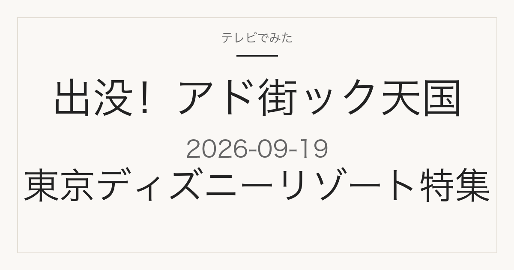

この記事には広告・アフィリエイトリンクが含まれる場合があります。
2026年9月19日（土）放送
出没！アド街ック天国
東京ディズニーリゾート
東京ディズニーランド・東京ディズニーシーの魅力を深掘りする特集回
これは放送前の記事です。番組公式の次回予告で確認できた内容だけを載せています。街・スポットのランキングや順位はまだ発表されていません。放送後、確認できた内容を同じページに追記します。
紹介予定の見どころを見る
特集概要
東京ディズニーリゾートの見どころ予告
順位は未発表
テレビ東京の番組公式サイトによると、この回は「夢と魔法の王国 東京ディズニーランド」と「冒険とイマジネーションの海 東京ディズニーシー」を擁する東京ディズニーリゾートの魅力を深掘りする特集です。個別のスポット名・順位・価格はいずれも次回予告の時点では記載がありません。
- キャラクターグリーティング — ディズニーの仲間たちとのハッピーな出会いとご挨拶が紹介予定
- パークを彩る緑と花 — ジャングルの熱帯植物と、ナスが育つ家庭菜園が紹介予定
- パークのおやつ＆レストラン — 限定ポップコーンとチュロスが紹介予定
- 夜のパレード — 光とディズニーミュージックで彩るファンタスティックな夜のパレードが紹介予定
- キャストのコスチューム — 髪飾りやボタンなど、細部のこだわりが紹介予定
ゲストは中間淳太さん（WEST.）と田辺智加さん（ぼる塾）が出演予定と番組公式で確認できました。
出典は2026年9月16日確認のテレビ東京「出没！アド街ック天国」公式サイトの次回予告です。放送前に公表された情報のため、実際の放送内容とは異なる場合があります。
見たあとに
放送後は、このページで見どころの詳細を確認できます
放送後、番組で紹介されたスポット名や順位が確認でき次第、同じページに追記します。ブックマークしておけば、そのまま最新の内容を見られます。
掲載するのは、番組公式か施設・店舗の公式情報で確認できたものだけです。
出典
テレビ東京「出没！アド街ック天国」公式の次回予告（放送日・特集内容・ゲストの出典）
当サイトは番組公式サイトではありません。放送内容は変更になる場合があります。